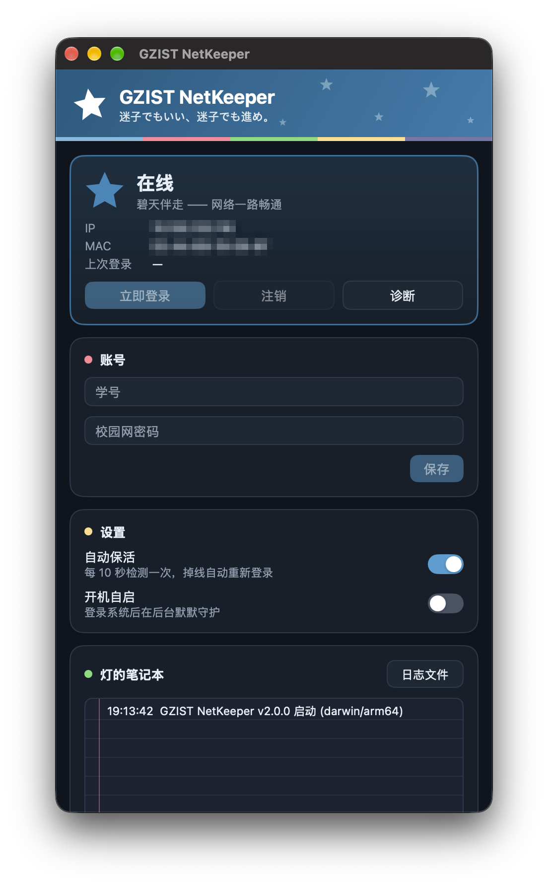
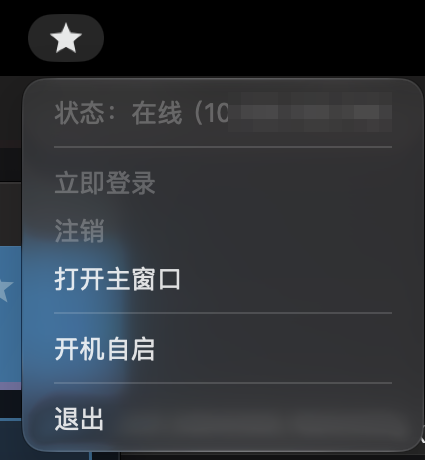

迷子でもいい、迷子でも進め。—— 广州理工学院校园网自动登录保活客户端
Apple 芯片 / Intel · .dmg首次打开：系统设置 → 隐私与安全性 → 仍要打开
x64 / ARM64 · 安装包，无需管理员SmartScreen：更多信息 → 仍要运行
x64 / ARM64 · .deb 或 install.sh托盘需要 libayatana-appindicator3


10.0.10.252
卸载开机自启.bat
更多说明见 README。